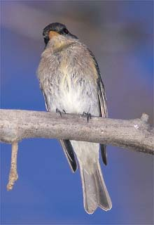

|  |
|
Figure 5. Eastern Wood-Pewee, Contopus virens (1996-155), Huntington Beach, Orange Co., 1 November 1996. The solidly yellow-orange madible, realtively pale breast, and plain undertail coverts are all typical of this species, but vocalizations confirmed the identification. Photo by Larry Sansone |